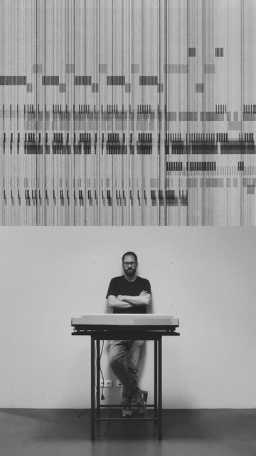

Kleinert est un artiste qui vit à Hambourg en Allemagne, il fut formé en Devon en Angleterre aux arts de l’ébénisterie.De retour à Hambourg, il obtient un diplôme en design industriel à l’université des Beaux-Arts en 2008. Avec ses 10 ans d’expérience dans le design, l’architecture d’intérieur et la conception d’objets de toute sorte, il initie des projets innovants et toujours interdisciplinaires en corrélation avec une approche conceptuelle.
Fasciné par le “design génératif”, qui consiste en un affranchissement des contraintes pragmatiques inhérentes au design pour se concentrer uniquement sur l’aspect créatif, Kleinert utilise cette pratique pour créer des partitions sensorielles.
Pour ce faire, il existe des outils permettant d’ouvrir le champ des possibles, permettant de passer de quelques solutions, ou stratégies d’évitement à une infinité de réponses à un problème donné. Cela nécessite de repenser la place du créateur dans le processus artistique, car les algorithmes viennent générer des réponses et des possibilités par milliers à la place de l’artiste. “I can see music”est issu du design génératif et consiste en des modèles et graphiques générés par la musique.
Le processus mis en place par Kleinert consiste en un fichier son qu’il lance à travers un code qui lit et extrait certains paramètres comme les courbes d’amplitude, de fréquence, le rythme, la dynamique générale etc. Dans le code, il a défini de quelle manière ces paramètres doivent se traduire graphiquement et quel impact ils ont sur les formes géométriques et les lignes créées. Pour finir, il convertit sortie pour qu’elle soit imprimable avec le traceur et qu’elle définisse la couleur en laissant toujours peu de place aux variations et aux changement de coloris pendant le processus de traçage.
